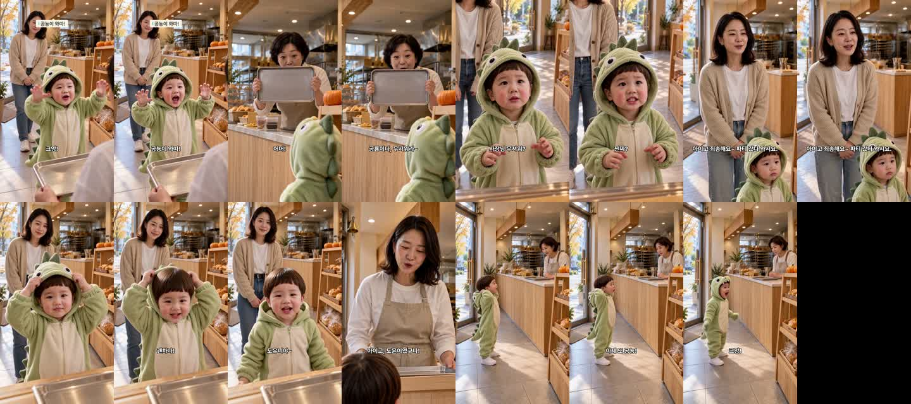

할로윈 공룡 옷 빵집 편 — 재제작 v2
2026-10-22 · 판 R15 · 대표님 «애기 발음이 아니야» · «어른들 연기 어색» 반영 · 업로드·승인 큐 등록 안 함
바뀐 것
| 컷 | v1 | v2 |
|---|---|---|
| 1 도윤 | 크앙! 공룡이 왔다! | 크앙! 공뇽이 와따! |
| 3 도윤 | 사장님 무서워? 진짜? | 사장님 무셔워? 찐짜? |
| 5 도윤 | 괜찮아! 도유니야~ | 괜차나! 도유니야~ |
| 7 도윤 | 이제 또 공룡! 크앙! | 이제 또 공뇽! 크앙! |
| 2·6 사장님 | «과장되게 무서운 척» · 목소리 설명이 프롬프트에 빠짐 | 단골 꼬마랑 장난치듯 가볍게 · 40대 동네 빵집 사장님 일상 목소리 |
| 4 엄마 | 목소리 설명 빠짐 | 살짝 민망한 미소 · 30대 엄마 일상 목소리 |
| 첫 2.4초 제목 글씨 | 괜찮아! 도유니야~ (결말) | 공뇽이 와따! (훅) |
귀로 확인 부탁드릴 것
아기 발음 — 자동 받아쓰기는 아기 말을 표준어로 고쳐 적어서 제가 판정할 수 없습니다. 3컷은 «무시워»로, 7컷은 «공유»로 받아써져 혀짧은 소리가 일부 들리는 것으로 보입니다.
도윤이 목소리 높이: 1컷 492Hz · 3컷 356Hz(v1 320Hz) · 5컷 381Hz · 7컷 427Hz — 모두 기준 330Hz 위.
1.5초 간격 장면
